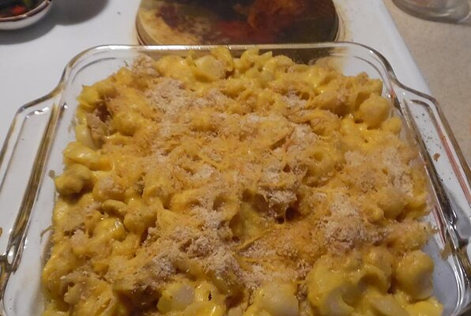

Tuna Mac

Description
An easy casserole using mac-n-cheese from a box with a can of tuna, mushrooms, and bread crumbs on top.
Prep: 10 min Cook: 40 min Servings: 4 Yield: 4 servings
Ingredients
- 6 cups water
- 1 (7.25 ounce) package macaroni and cheese dinner mix
- ¼ cup margarine, cut into pieces
- ¼ cup milk
- 1 (5 ounce) can tuna, drained and flaked
- 1 (4.5 ounce) can sliced mushrooms, drained
- 1 cup bread crumbs
Steps:
- Preheat oven to 350 degrees F (175 degrees C).
- Bring water to boil in a saucepan. Cook macaroni at a boil, stirring occasionally, until tender, 7 to 8 minutes; drain.
- Return macaroni to the saucepan. Stir cheese sauce mixture from the packet, margarine, and milk into the macaroni until the margarine melts and the macaroni is evenly coated in sauce. Add tuna and mushrooms; stir. Pour macaroni mixture into a small casserole dish; top with bread crumbs.
- Bake in preheated oven until hot, about 30 minutes.
Nutrition Facts
Per Serving: 447 calories; protein 21.1g; carbohydrates 56.3g; fat 15.2g; cholesterol 17.8mg; sodium 902.6mg.
Original Recipe